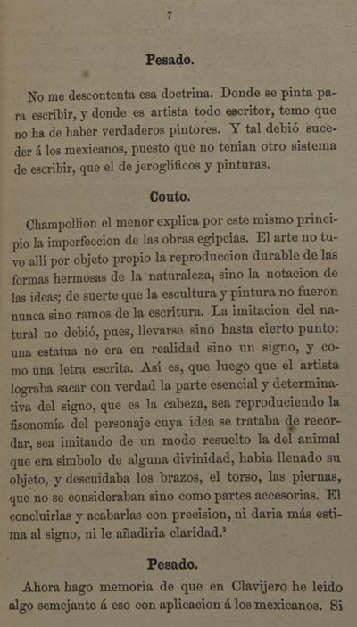

|
 |
Pesado No me descontenta esa doctrina. Donde se pinta para escribir, y donde es artista todo escritor, temo que no ha de haber verdaderos pintores. Y tal debió suceder á los mexicanos, puesto que no tenian otro sistema de escribir, que el de jeroglíficos y pinturas. Couto Champollion el menor explica por este mismo principio la imperfeccion de las obras egipcias. El arte no tuvo allí por objeto propio la reproduccion durable de las formas hermosas de la naturaleza, sino la notacion de las ideas; de suerte que la escultura y pintura no fueron nunca sino ramos de la escritura. La imitacion del natural no debió, pues, llevarse sino hasta cierto punto: una estatua no era en realidad sino un signo, y como una letra escrita. Así es, que luego que el artista lograba sacar con verdad la parte esencial y determinativa del signo, que es la cabeza, sea reproduciendo la fisonomía del personaje cuya idea se trataba de recordar, sea imitando de un modo resuelto la del animal que era símbolo de alguna divinidad, habia llenado su objeto, y descuidaba los brazos, el torso, las piernas, que no se consideraban sino como partes accesorias. El concluirlas y acabarlas con precision, ni daria más estima al signo, ni le añadiria claridad.2 Pesado Ahora hago memoria de que en Clavijero he leido algo semejante á eso con aplicación á los mexicanos. Si
|
| |
1 | 2 | 3 | 4 | 5 | 6 | 7 | ... | 105 | Siguiente |
||
| Arriba |
||||||||||||